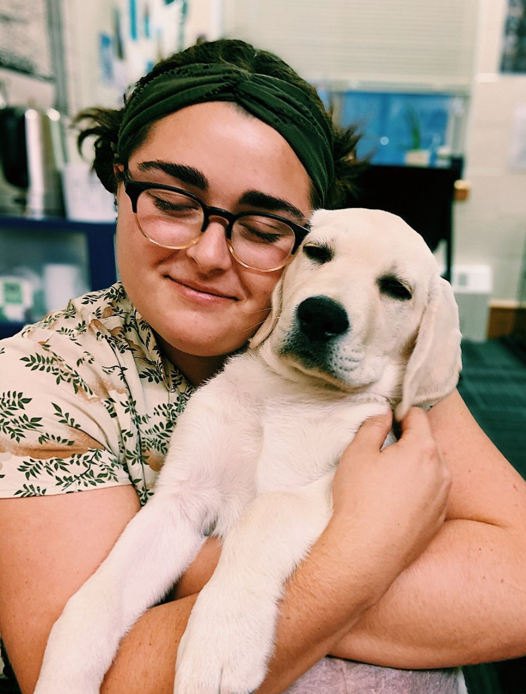
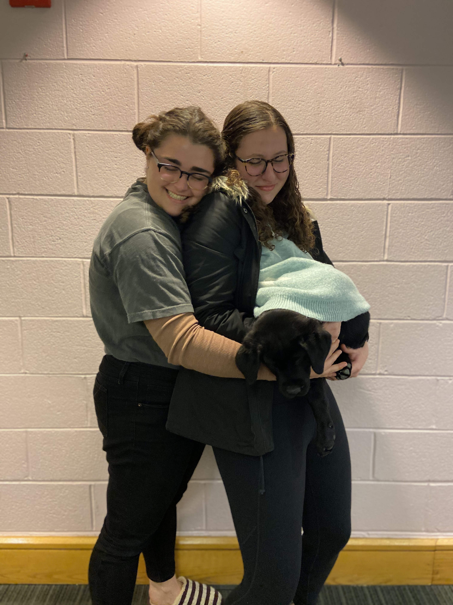
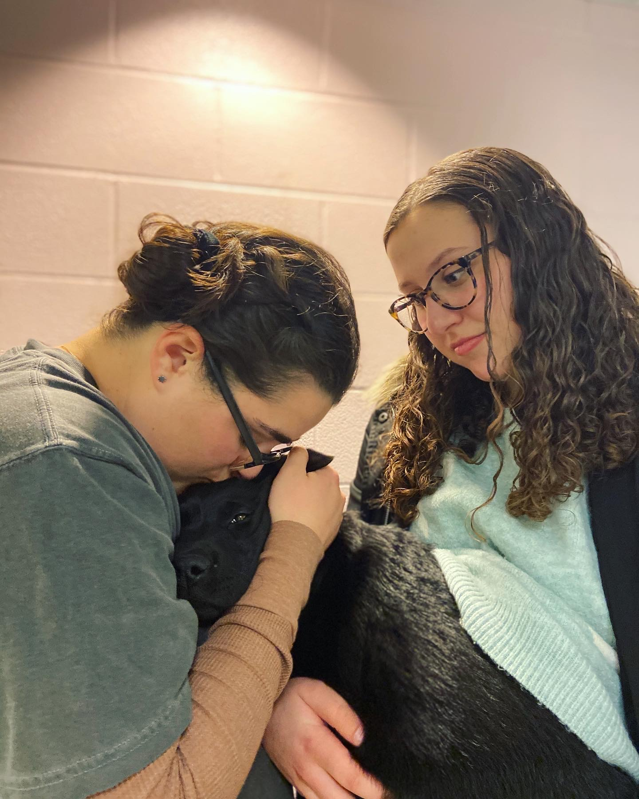
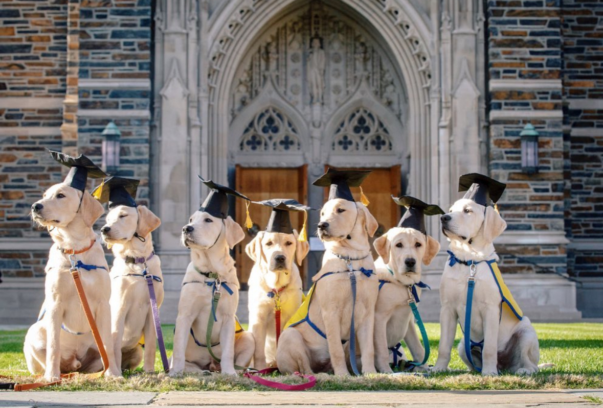
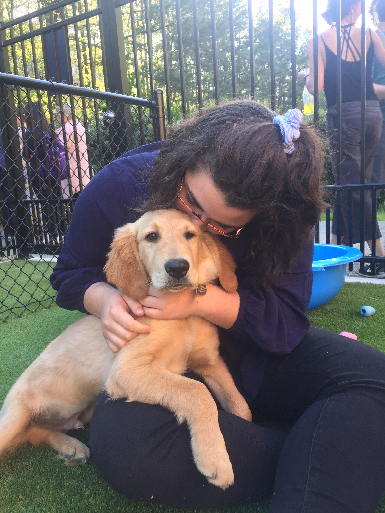
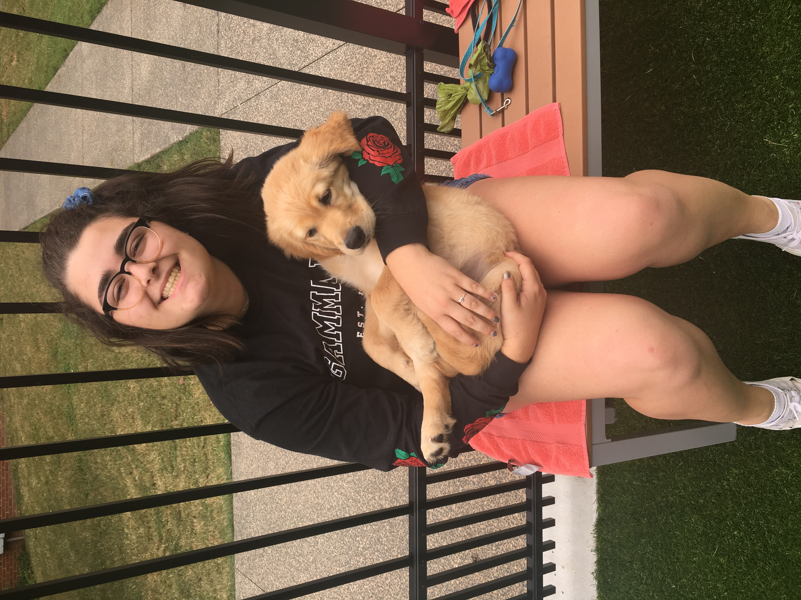
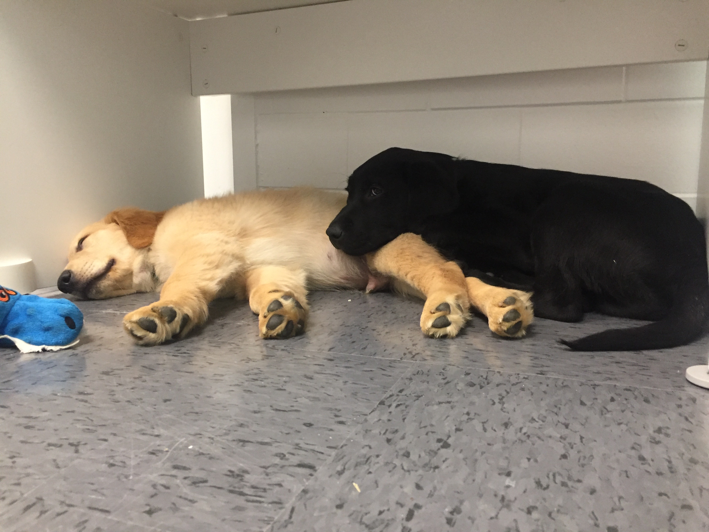

Field Safety
After eight years as a field technician, field safety has become a passion of mine.
Field research is inherently dangerous, but we can be safe and prepared if we follow proper planning and value field safety in the workplace. As a graduate student, I have made it a priority of mine to improve the field safety resources and culture in my department.
As a graduate student representative on the ESPM Field Safety Committee since Fall 2023, I have
- created three graduate student field safety workshops (General UCB Safety, Crew Management, and Identity Based Field Safety)
- offered the workshops to the larger graduate student population and guest lectured in the required first year graduate class
- attended the inaugural UC Field Safety Conference and the UC Queer/Trans Student Field Safety Conference
- built our gear sharing library, resource collection, and website
Our team as a whole
- organized and advertised Sexual Assault Prevention in the Field and Wilderness First Aid trainings
- created an ESPM specific Field Safety Plan Template
- surveyed nearly 500 students and researchers on the safety of their field experiences at UC Berkeley
- collected and redacted example field safety plans for reference
- submitted a list of recommendations for the department to improve field safety in the future, which were voted into effect in Fall 2024
- established a safety gear sharing resource for graduate students in ESPM including satellite phones and personal safety gear
You can see our work here!
Mentoring Experience
Sponsored Projects for Undergraduate Research (SPUR) Mentor - UC Berkeley, CA
February 2024 – Present
As a SPUR mentor, I have created positions within my research for undergraduate students to gain valuable skills and research experience early in their career for college credit. My first SPUR student worked with me to complete a literature review on the study of biodiversity and biogeochemical cycling in wetlands. I taught her the process behind a literature review, and we met weekly to discuss our findings. We are currently drafting a manuscript from this project for publication which will be my student’s first publication.
Over the past three years, I have been joined by eight students in the field through SPUR. In my local restored wetland sites, my students conduct point counts for birds at sunrise, assist in my drone flights over the landscape, and set audio recording equipment. They each have the opportunity to learn applicable field skills and get experience flying drones, which will open further field opportunities to them if they are interested.
Finally, I have mentored four undergraduate students on their thesis projects in the restored wetlands: - Ethan Aquino studying the impact of adding upland trees on avian biodiversity - Eden Gonzalez studying the connection between microalgae and the carbon cycle via remote sensing - Addie Bugas monitoring invasive species spread through drone and satellite imagery - Joohwan Yoo testing the impact of adding microplastics into restored wetland flooded soils


{kind=link}


Outside of the field, I work with the Echeverri Lab to mentor three engineering students while building remote sensing tools for biodiversity monitoring.

{kind=link}
College of Natural Resources Mentoring - Mentor - UC Berkeley, CA
September 2023 – May 2024
I mentored two environmental science majors who recently finished their freshman year. We met biweekly to work on areas they were interested in improving: time management, writing styles, and creating college level work. In addition, I gathered advice and resources from my colleagues in legal careers and law schools that my students were interested in pursuing.
Females and Allies Excelling More in Math, Engineering, and Science (FEMMES) Connect Mentor - Duke University, NC
January 2017 - January 2018
As a FEMMES Mentor, I worked with my mentee, an eighth grade girl, to show her potential career pathways that are open to her in science. She expressed an interest in research but was unsure what those jobs actually looked like. I brought her for a tour of the genetics lab and greenhouse I was working in, built robots with her, and helped her meet other female science students in other fields like medicine and chemistry.
Volunteer Work
ESPM Graduate Student Assembly - UC Berkeley
September 2023 - Present
- Orientation and Camping Trip Chair (May 2024 - Present) - Organize and host orientation and annual camping trip for incoming ESPM graduate students
- Cohort Social Chair (September 2023 - May 2024) - Worked on a team to organize community building events between graduate students, faculty, and staff
Duke Puppy Kindergarten - Volunteer
February 2018 - May 2020
- Dorm Puppy Raiser (September 2019 - March 2020) - Responsible for the training, socializing, husbandry, and overnight housing of a service dog in training for 40 hours a week
- Husbandry Volunteer (February 2018 - May 2019) - Taught CCI puppies basic commands and enforced house training twice weekly during shifts and socialized puppies with Duke Students on and around campus
- Trained in proper and safe animal training by Duke Canine Cognition Lab








